About
About Projects
Projects Games
Games Stories
Stories Store
Store Hobby
Hobby Notes
Notes How-to
How-toIn 2009 I participated in a comic battle on DeviantArt called TDC(The Digital Cup), involving the use of fictional original characters fighting each other using Digimon(set in the Digimon universe).. I used my DA account Mintenko(see avatar on the left) for this battle. I deactivated the account when the platform decided that it was okay to start using AI(fuck em, amirite?). The idea is to match people together, have them draw comics with the characters fighting each other, then a panel of judges decides who did the battle best, and the winner goes on to the next round until there is a single winner left.
I used my DA account Mintenko(see avatar on the left) for this battle. I deactivated the account when the platform decided that it was okay to start using AI(fuck em, amirite?). The idea is to match people together, have them draw comics with the characters fighting each other, then a panel of judges decides who did the battle best, and the winner goes on to the next round until there is a single winner left.
I used to roleplay Digimon lot with my friend Bully Birdy, and had a bunch of original characters, which I included in my TDC story.
The main character is Orion Malvado, a character I've had for a while.
A warning, these pages are very vertical, be prepared to zoom!
Round One


Round Two


Round Three
 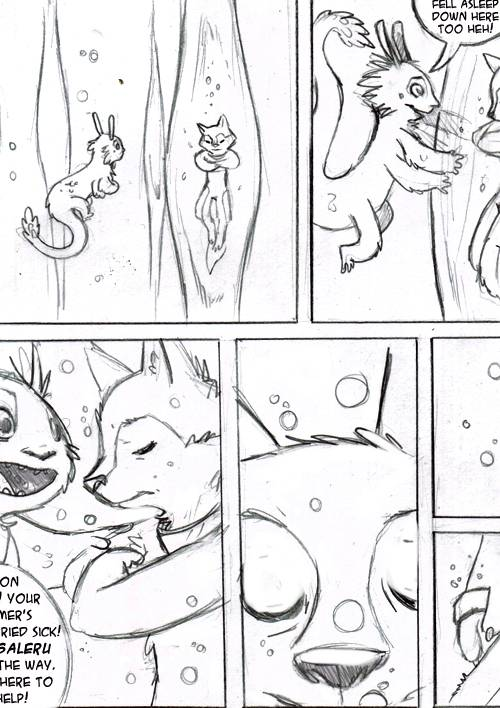
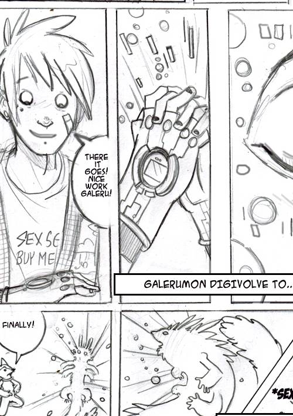
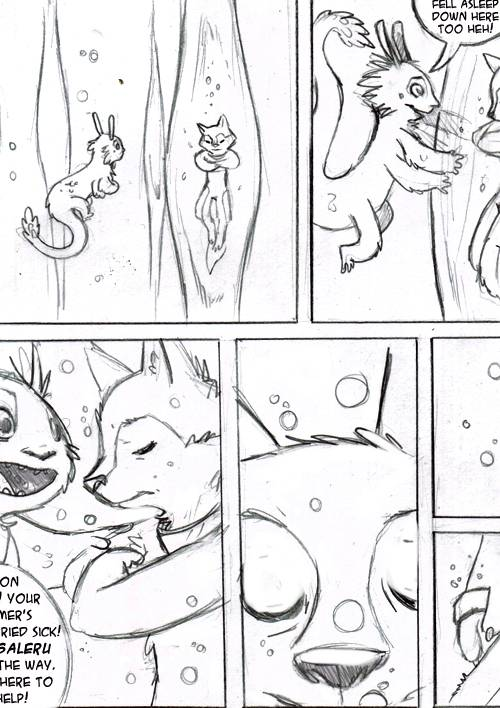
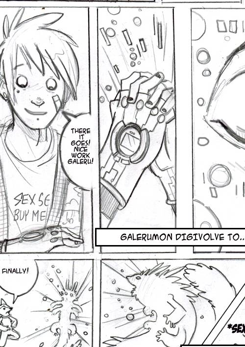
Round Four
 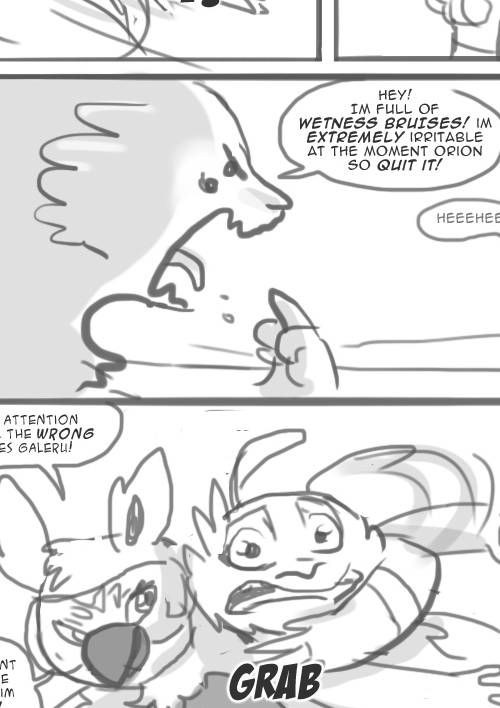
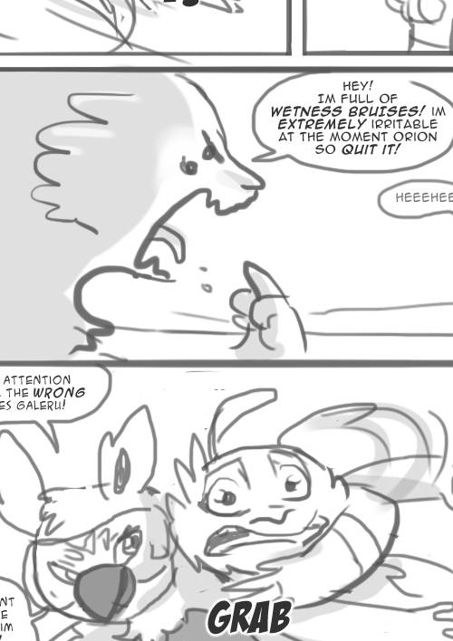
I did not win TDC. In truth, I had no time when came time to do Round 4. I had to do it digitally, and very roughly. I made a little exit comic as a way to end my side of the story.

Extra Art
 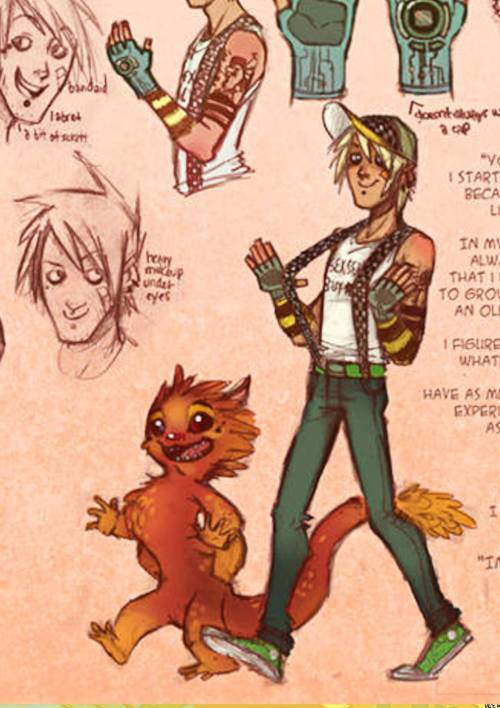
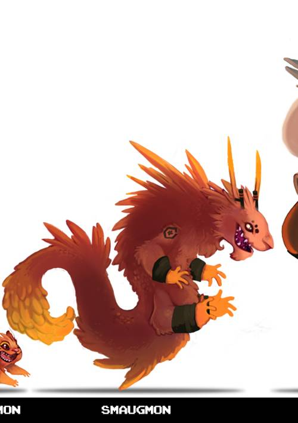
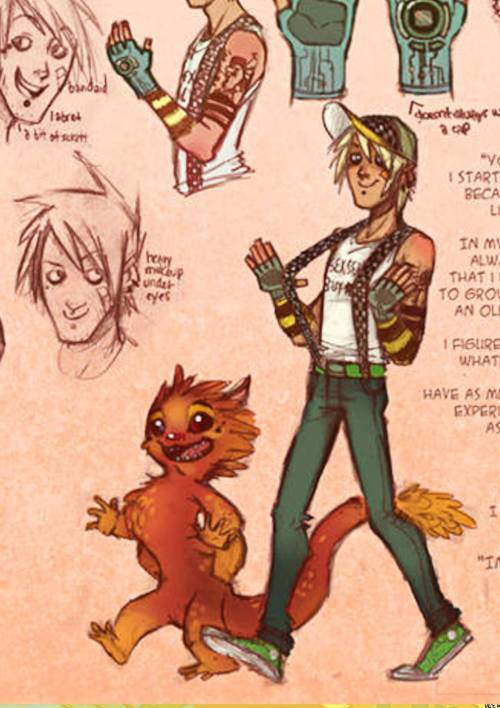
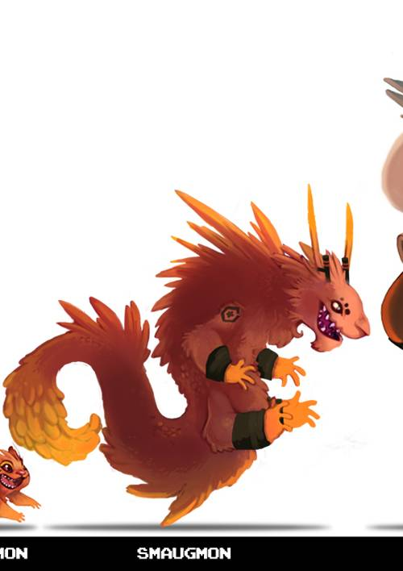


 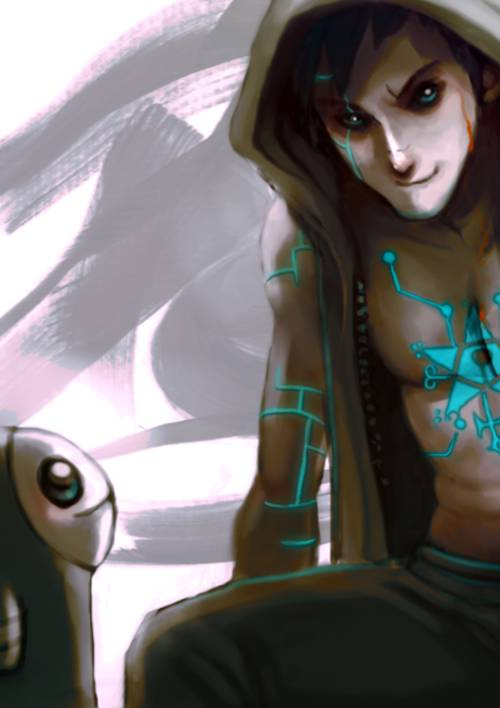
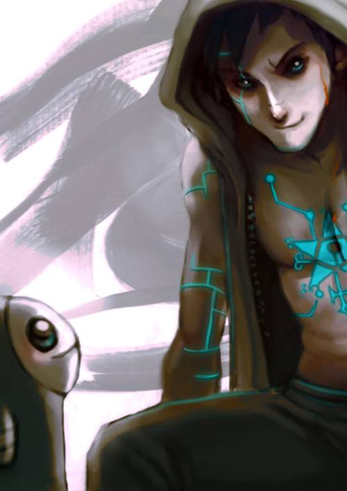